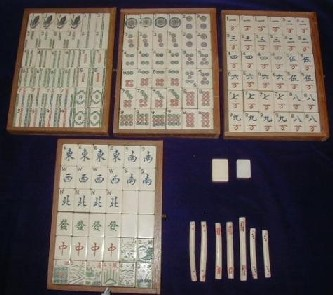
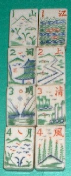
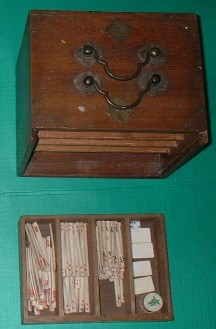
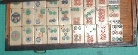
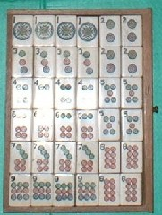
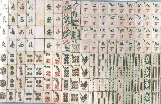
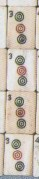
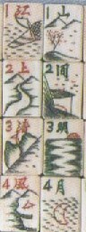

花牌の語句が江上清風（こうじょうせいふう）・山間名月（さんかんめいげつ）となっているので、こう呼ぶ。
 
日本人の姓でも、加藤、鈴木などは非常に多い。浅見とか夫馬（ふま）なると、あまり無い。まぁたまに耳にするという感じ。小鳥遊（たかなし）とか一尺八寸（かまつか）となると、「おい、そんなんがあるのか」というくらい珍しい。
花牌で加藤、鈴木に当たるのが、春夏秋冬(チュンシャーチョートン)・梅蘭菊竹(メーランチーツー)。浅見、夫馬レベルなのが、江上清風・山間名月、あるいは琴棋書画(きんきしょが)・漁樵耕読（ぎょしょうこうどく）など。
小鳥遊（たかなし）とか一尺八寸（かまつか）レベルなのは、嫦蛾奔月(こうがほんげつ)・天女散華（てんにょさんげ）とか唐僧取経（とうそうしゅきょう）・大○天空（だいどうてんくう）など（「どう」の漢字はPCで発見できなかった）。
別に語句によって花牌の使用法が変わるわけではない。それならどんな語句であっても構わないのであるが、この語句や彫りによって、製造年代や製造地などが類推できる。そこで研究者にとっては、非常に貴重な資料となっている（それに、牌に名前を付けやすいので便利。(^-^；）。
この江上清風・山間名月という語句は、中国古代の大詩人の一人、蘇軾の「前赤壁図（ぜんせきへきず）」のなかの「惟江上之清風、與山間名月」という文章に由来している（一風変わった語句は、漢詩や故実を踏まえているものが多い）。
＃赤壁（せきへき）とは、後漢の劉秀と楚の項羽との合戦場の名称（蜀の軍師、諸葛孔明の作戦により、蜀軍が大勝）。
1020年代、Ｊ．Ｐ．バブコックという人物が、麻雀牌の輸出をはじめた。それによって、アメリカで一大麻雀ブームが起きた。
＃Ｊ．Ｐ．バブコックについては珍奇牌No.16を参照してください。
このカテゴリーNo.16でバブコック牌の後期タイプを紹介した。そして今回紹介した江上清風牌は、中期タイプである。
バブコック牌には、下記のような特徴がある。
（１）１筒に「自由麻雀」という文字が刻印されている。
（２）８筒は全部が赤色か青色。
（３）萬子は略万。
（４）索子は棒状タイプ。
（５）数牌、インデックス入り。
＃その他にも細かいチェック部分はあるが割愛。
当初は作りも丁寧であったが、アメリカでブームとなったため、たくさんの牌を早く製造することが求められた。そこで手間を省くため、中期になると（１）の１筒に「自由麻雀」という文字を刻印することが省略された。それが中期タイプである。もちろん点棒は、抽銭（チューチェン）そうろうの古典タイプである。

後期タイプになるとインデックスを入れやすくするため、３筒、７筒の斜め牌が逆流れ（左肩下がり）となっている。
３筒、７筒・逆流れ

しかし中期タイプでは、まだ３筒、７筒の斜め牌は順流れ（右肩下がり）である。しかしインデックスを入れやすくするため、斜め牌が垂直に近い状態になっている。

（２）の８筒は全部が赤(朱)色というのは、筒子の模様がサイコロの目に由来することを示している。現在日本で使われるサイコロは１の目だけが赤色であるが、中国のサイコロは４も赤色である。もともとサイコロは１以外はすべて黒色であった。これを朱色としたのは、唐の時代玄宗皇帝と伝えられる。
玄宗皇帝がサイコロゲームをしていたとき、４が出ると勝ちという局面になった。振りサイしたところ、みごと４が出た。皇帝は大いに喜び、４に朱色を賜った。以来、中国のサイコロは、４が朱色となっている。また朱色は、中国では高い身分の者しか使えない色。それは日本にも伝来し、羽柴秀吉も大手柄を立てたとき、織田信長から朱傘をさすことを許されている。
６筒はその朱４と２の組み合わせであるから、４の方が赤色で２の方は黒色となっている。６筒のドットが４と２に分離しているのは、４と２の組み合わせであることを示している。７筒は４と３の組み合わせであるから４が赤となっている。４の上の３が斜めになっているのも、サイコロの目の３が斜めだからである。８筒は朱４二つであるから、全部赤色となる。
前述したように中期タイプではインデックスを入れやすくするため、３筒・７筒が垂直に近い状態になっている。そして麻雀博物館も３筒・７筒が垂直に近い状態になっている江上清風牌を収蔵している。
麻雀博物館所蔵牌
  
この博物館収蔵牌はイギリスで購入されたという（1920年代、イギリスでも麻雀ブームがあった）。σ(-_-)は日本で購入したので、収集された場所は地球の裏と表ということになる。しかし共通する特徴から、博物館収蔵牌と今回紹介した牌は、同じ上海地区の同じ場所で製造されたことが類推される。
ただし博物館収蔵の江上清風牌は、８筒が黒で塗色されている。また博物館に収蔵されているバブコック牌には、青色８筒も複数ある。１筒の文様やインデックスの入れ方も微妙に異なっている。さらに花牌の江上清風・山間名月も、図柄が異なる。これによって、当時から牌作り、彫り、塗色について、それぞれの行程で複数の職人が携わっていたことが推定される。
|